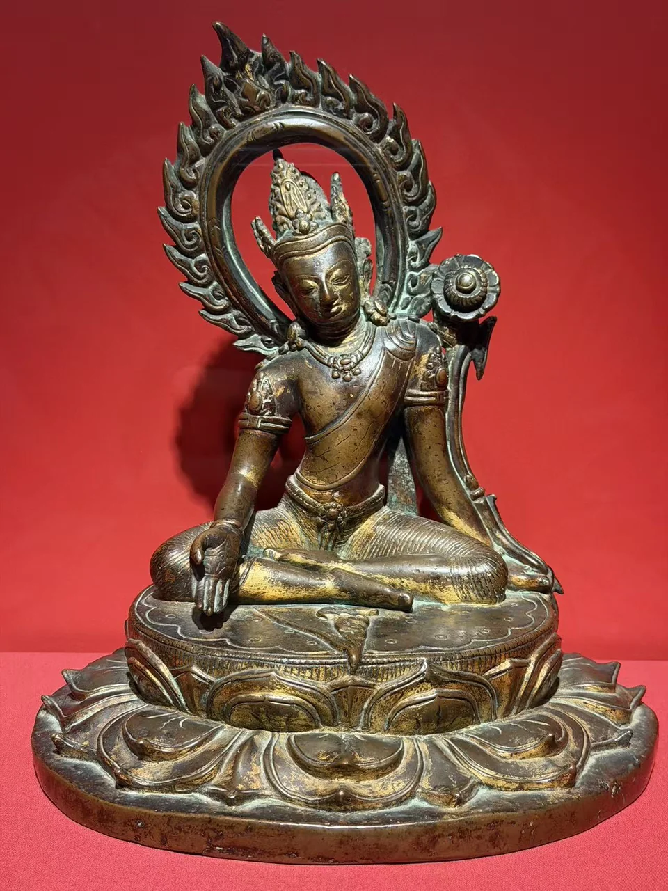
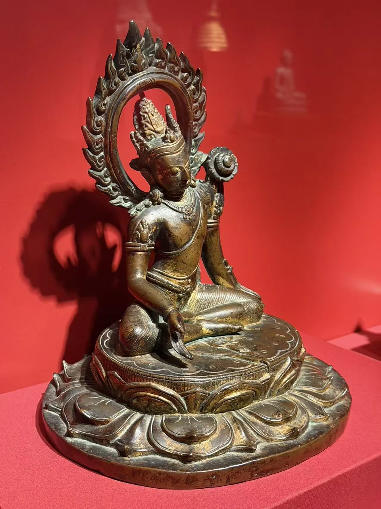
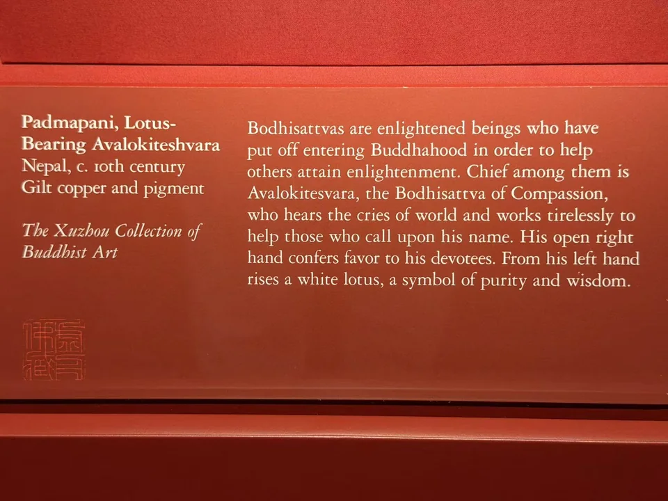

THE XUZHOU COLLECTION
持莲观音
Padmapani, Lotus-Bearing Avalokiteshvara
低首、伸掌与撑座：重看一尊尼泊尔持莲观音。
头微微低下，手却向人伸出。这次回到休斯顿美术馆，我比第一次更喜欢这尊持莲观音。最近看过几件更早的尼泊尔佛教造像，再看它，才留意到低首、伸掌与左手撑座之间的关系：身体微微倾斜，目光收向内，手掌却朝着面前的人打开。

- 地区
- 尼泊尔
- 年代
- 约10世纪
- 材料
- 鎏金铜、颜料
- 收藏
- 虚舟收藏（私人收藏）
- 观看地点
- 休斯顿美术馆（MFAH）
- 尺寸
- 高26.7厘米（据收藏图录研究资料及苏富比记录）
作品札记
撑住身体，也向人伸掌
左手落在身体后侧，撑住座面，又握着沿臂上升的莲茎；莲花恰在肩旁开放。右臂则松缓地垂下，掌心向外，作施愿的姿态。头光的圆环在身后围出完整的轮廓，衬着低下的头与偏移的上身。Huntington在讨论本件时，也把这张开的手掌与放松的坐姿联系到观音面向信众的亲近感。

宽大的莲瓣托住交叠的双腿，裙上细密的刻线则顺着身体转折。Weldon以东印度帕拉铜像比较这种坐法、低矮的中央冠叶与宽瓣莲座，同时把胸腹和四肢柔和、饱满的塑形放回加德满都谷地传统中理解。沿着莲茎、手臂与身体看过去，外来的形式与当地的塑造习惯，在一尊小像上彼此相接。
冠中的小立佛

靠近看，发髻前还有一尊很小的站立佛像，Weldon将其辨为阿弥陀佛。它的直立姿态，与下方观音低首、侧坐的身体形成细微的对照。Pal讨论同类冠饰时，提出与《观无量寿佛经》第十观对读：
其天冠中有一立化佛。
Weldon，Cat.12 ↗ · Pal，第4节、图14 ↗ · 《观无量寿佛经》第十观 ↗
这尊像的观看与供奉，也可能跨过山地。Weldon根据发间的石青，以及面部和颈部的金彩，判断它曾用于藏传佛教礼拜。这样的表面痕迹提示了另一段使用历史；具体供奉地点和流转路线，目前仍缺少文献。
年代、冠饰与资料范围
年代栏沿用MFAH现场展签的“约10世纪”。苏富比2020年拍卖标作“9—10世纪”；HAR #13744标作“1100—1199年”，但没有附上断代理由。几份记录并存，不能只据网页年代字段消除差异。
Pal与Alsop讨论的冠饰，为比较冠中佛的立姿、坐姿提供背景；相近的冠饰本身不足以证明本件复制某一圣像，或曾供奉于某一寺院。Weldon关于坐姿、谷地传统及藏地礼拜的判断，本页据读者提供的Cat.12研究摘要整理。
Himalayan Art Resources，Avalokiteshvara，编号13744 ↗ · Pratapaditya Pal，〈Prolegomena to the Study of an Early Wood Bodhisatva from the Himalayas〉，2023，第4节及图14 ↗ · Ian Alsop，〈Phagpa Lokeśvara of the Potala〉，Orientations，1990年4月 ↗
从洛克菲勒旧藏到虚舟收藏
苏富比拍卖照中的火焰头光、肩侧莲花，以及莲座前缘的缺口，都与现场照片相吻合；拍卖记录所列高度26.7厘米，也与本件图录资料一致。这些具体细节，让展柜中的观音与2020年的公开拍卖记录接在了一起。
几段可以追溯的收藏记录
1922年 · 纽约
Abby Aldrich Rockefeller从Dudley James购得。苏富比长说明援引洛克菲勒档案，记载它曾放在缅因州的家族夏居The Eyrie。旧发票称它为“Sung bronze Figure, seated in Indian style”（“印度式坐姿的宋代铜像”）。这是1922年的旧著录，留下了当时如何理解这尊像的痕迹。
2020年9月22日 · 纽约苏富比
Lot 322，估价300,000—500,000美元。官方成交新闻稿公布成交价830,700美元，含买家佣金。
2026年 · MFAH收藏图录
收入Approaching the Buddha: Transmission and Transformation，Cat.12，条目作者David Weldon，身份为虚舟收藏作品。今天在休斯顿美术馆展出。
收藏资料的依据
1922年的购买记录见苏富比拍品来源栏；旧发票与The Eyrie见同页嵌入的长说明，另有Alain R. Truong转载。这里引用的是拍卖方对档案的说明，未直接核读原发票或洛克菲勒档案。
拍卖长说明还推想过经西藏进入中国的流转可能，本页不将其写成已知路线。苏富比所引那烂陀比较像图版86，也暂未与下列印度博物馆藏品作同件认定。
其他角度与细部





现场展签与原始记录


- 题名
- Padmapani, Lotus-Bearing Avalokiteshvara
- 地区
- Nepal
- 年代
- c. 10th century
- 材料
- Gilt copper and pigment
放在一起看
一立一坐，先看冠中的佛 →
沃尔特斯艺术博物馆54.3129：9世纪尼泊尔观音，亦为Pal文章图14。把它与本件并看，两件冠中都有小立佛；站姿与侧坐，则让观音与观看者形成不同的身体关系。
另一种坐姿，另一尊冠中佛 →
布达拉宫Lima Lhakhang 810：10世纪尼泊尔持莲观音。右前臂搭在抬起的膝上，冠中为坐佛。Weldon脚注所指为von Schroeder卷一第493页、图版157D；转载页另列的167C才是另一尊左臂后撑的例子。
左手撑座，同时持莲 →
印度博物馆9429/A24278：出自那烂陀，约8—9世纪帕拉铜像。馆方描述的左手动作，与本件把支撑身体和持莲合在一起的方式尤其值得比较；暂不认定它就是拍卖说明援引的图版86。
从斯瓦特的面颊，看到尼泊尔的手掌 →
本站约7世纪的斯瓦特持莲观音，同样侧坐，莲花升到肩边。它把右手举到面颊旁；这尊尼泊尔观音则将右掌伸向观者。先看手的位置，再看身体怎样随之倾斜。
资料与来源
- David Weldon，持莲观音条目，Cat.12，载 Approaching the Buddha: Transmission and Transformation，2026 ↗
- Susan L. Huntington，〈Creating Merit: Art in Buddhist Practice〉，图6 ↗
- 苏富比，2020年9月22日纽约拍卖，Lot 322 ↗
- 苏富比，纽约亚洲艺术周成交新闻稿，2020年9月24日 ↗
- Alain R. Truong，拍卖长说明转载，2020年9月25日 ↗
- Pratapaditya Pal，〈Prolegomena to the Study of an Early Wood Bodhisatva from the Himalayas〉，2023，第4节及图14 ↗
- Ian Alsop，〈Phagpa Lokeśvara of the Potala〉，Orientations，1990年4月 ↗
- 《观无量寿佛经》第十观，国立故宫博物院清抄本录文 ↗
- Himalayan Art Resources，Avalokiteshvara，编号13744 ↗
- 沃尔特斯艺术博物馆，Lokeshvara，54.3129 ↗
- Himalayan Buddhist Art，〈Nepal – Avalokiteshvara (seated) (2)〉，2023年10月19日 ↗
- Museums of India，Bodhisattva（菩萨像），印度博物馆9429/A24278 ↗